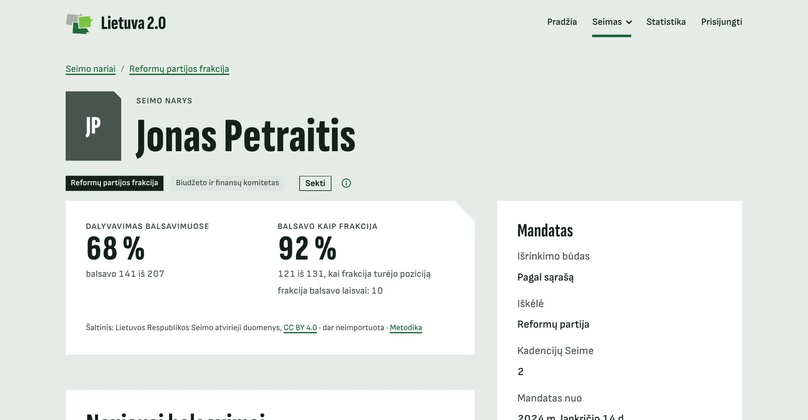
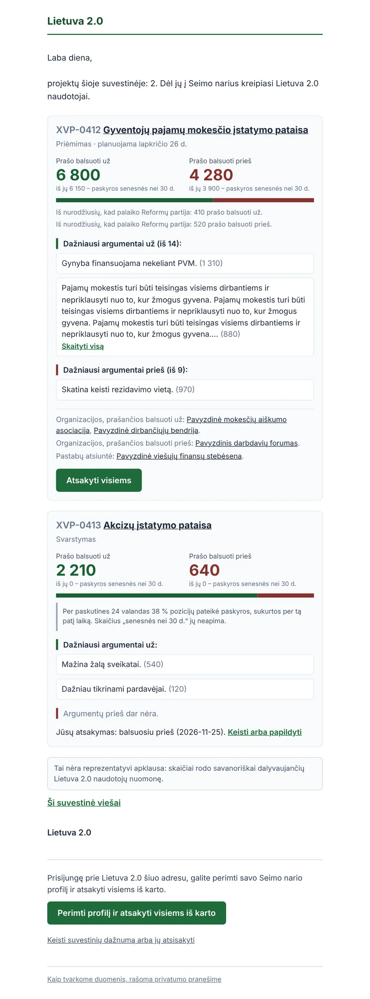
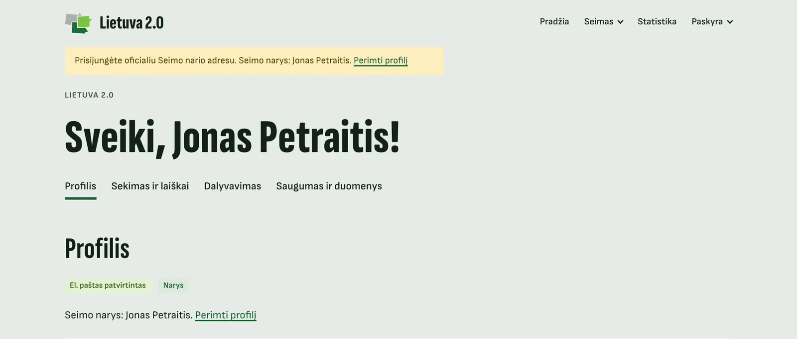
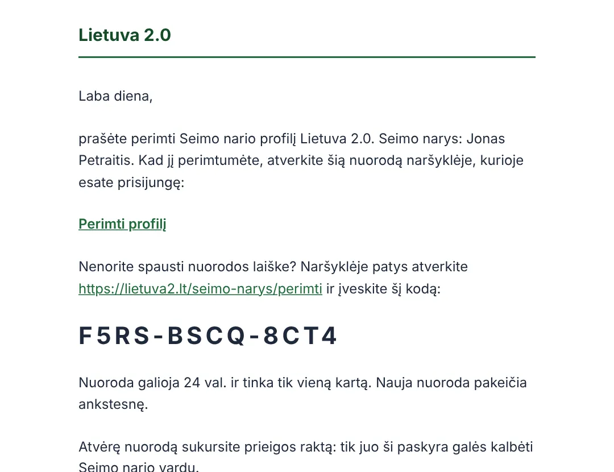
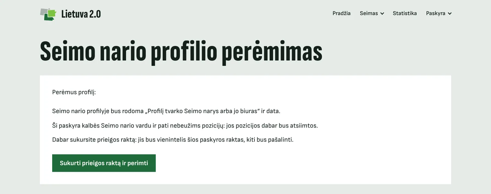
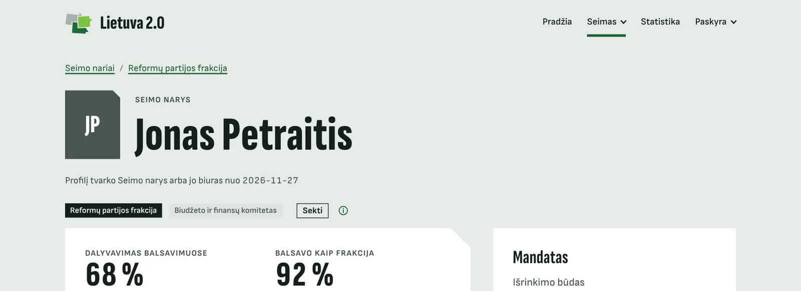
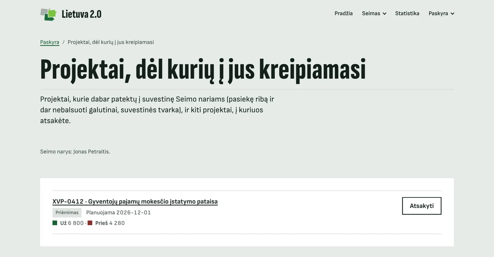
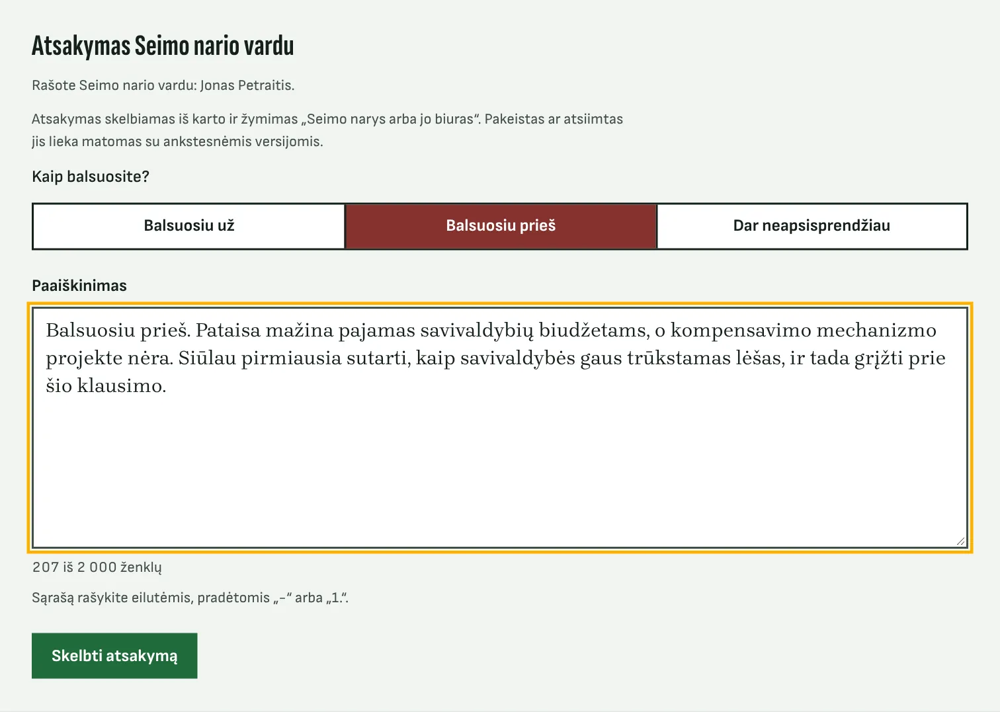
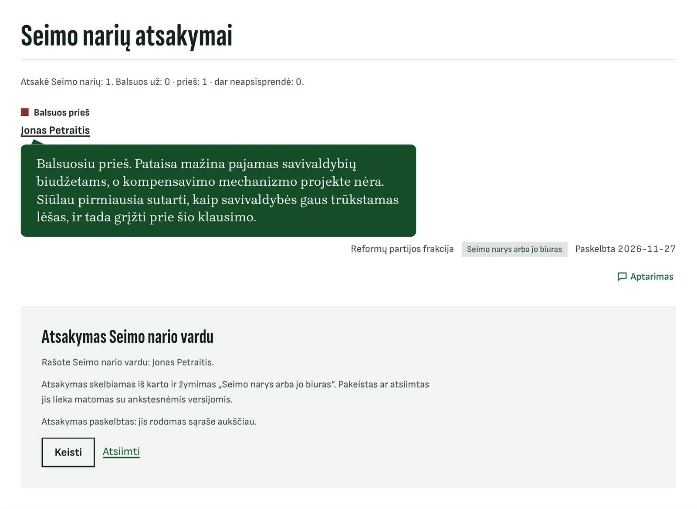
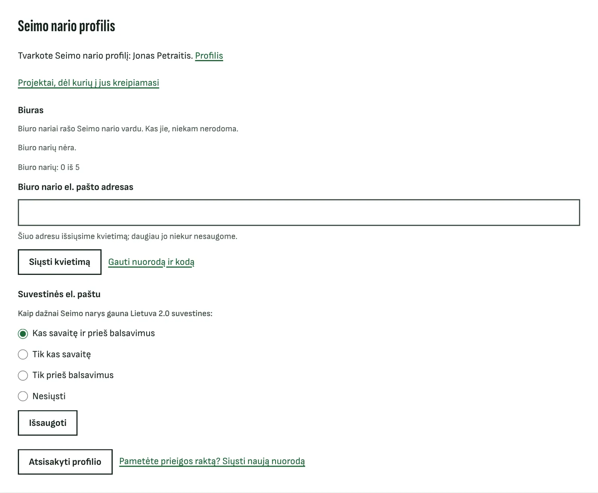

Ką matysite Lietuva 2.0 ir ką galite padaryti: nuo profilio, kuris jau yra, iki atsakymo, kurį vienu metu pamato visi, prašę jūsų balsuoti. Užtruks apie 10 minučių; slaptažodžio nereikia.
Kas tai ir kodėl – puslapyje Politikams.
Kiekvieno Seimo nario profilis sudaromas iš Seimo atvirųjų duomenų: frakcija, komitetai, mandatas, dalyvavimas balsavimuose ir naujausi balsavimai. Nieko daryti nereikia – profilis rodomas ir tada, kai neprisijungiate.
Profilyje nėra reitingų ir „neatsakytų projektų“ skaičiaus. Jei profilio neperimate, apie tai niekur neužsimenama.

Kai dėl projekto pasisako pakankamai Lietuva 2.0 naudotojų, jis patenka į suvestinę Seimo nariams. Vienas laiškas apie kelis projektus: kiek žmonių prašo balsuoti už ir kiek prieš, kiek iš jų turi senesnes nei 30 dienų paskyras, dažniausi abiejų pusių argumentai ir organizacijų pozicijos. Jei pakankamai dalyvių nurodė remiantys jūsų partiją, matysite ir ko prašo jie.
Laiško apačioje – mygtukas atsakyti visiems ir nuoroda pakeisti, kaip dažnai suvestines gaunate, arba jų atsisakyti.
Kol vyksta bandymas, suvestinės sudaromos ir skelbiamos svetainėje, bet Seimo nariams nesiunčiamos.

Registruokitės tuo el. pašto adresu, kuris nurodytas Seimo svetainėje (…@lrs.lt). Svetainė atsiųs šešių skaitmenų kodą; įvedę jį, nurodykite vardą ir sutikite su naudojimo taisyklėmis.
Svetainė iš karto atpažįsta oficialų adresą ir kiekviename puslapyje primena: „Prisijungėte oficialiu Seimo nario adresu“. Kol profilio neperimate, viešai apie tai niekas nerodoma.
Kol vyksta uždaras bandymas, registracijai gali prireikti kvietimo kodo. Parašykite info@lietuva2.lt – atsiųsime.

Paskyros skiltyje „Dalyvavimas“ paspauskite „Perimti profilį“. Į oficialią pašto dėžutę ateis laiškas su nuoroda. Ji galioja 24 valandas ir tinka vieną kartą. Jei nuorodos spausti nenorite, laiške yra ir kodas, kurį galima įvesti ranka.
Kodėl nuoroda, o ne tik prisijungimo kodas? Kad niekas negalėtų kalbėti jūsų vardu atspėjęs kodą: perimant profilį visada reikia ir laiško, ir prieigos rakto.

Atvėrę nuorodą toje pačioje naršyklėje, pamatysite, ką reiškia perimti profilį, ir paspausite „Sukurti prieigos raktą ir perimti“. Prieigos raktas (angl. passkey) – tai telefono ar kompiuterio atrakinimas pirštu, veidu ar PIN kodu. Slaptažodžio nėra.
Perėmus profilį, ši paskyra kalba Seimo nario vardu ir pati pozicijų dėl projektų neužima: anksčiau pasirinktos pozicijos atsiimamos.

Profilyje atsiranda viena eilutė: „Profilį tvarko Seimo narys arba jo biuras“ ir data. Daugiau nieko: nei paskyros adresas, nei biuro narių vardai neskelbiami.

Paskyros meniu atsiranda puslapis „Projektai, dėl kurių į jus kreipiamasi“: projektai, kurie patektų į suvestinę, ir tie, į kuriuos jau atsakėte. Prie kiekvieno – planuojama Seimo data, abi pusės ir mygtukas „Atsakyti“.

Projekto puslapyje pasirinkite, kaip balsuosite – už, prieš ar dar neapsisprendžiau – ir paaiškinkite kodėl. Atsakymas paskelbiamas iš karto, projekto puslapyje ir jūsų profilyje, su žyma „Seimo narys arba jo biuras“. Projektą sekantys žmonės gauna laišką.
Atsakymą galite pakeisti arba atsiimti; ankstesnės versijos lieka matomos, kad būtų aišku, kas ir kada pasakyta.


Skiltyje „Dalyvavimas“, dalyje „Seimo nario profilis“:
